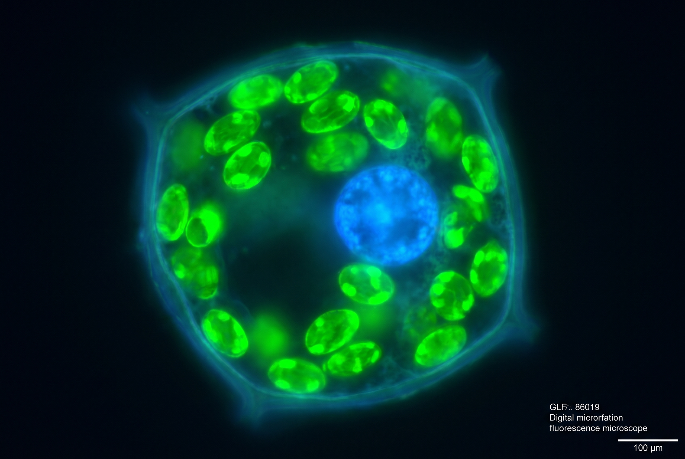

La unidad básica de la vida. Tipos de células, sus organelas y cómo se organizan para formar organismos complejos.

Eucariota y procariota. Célula animal y vegetal. Diferencias y similitudes.
Núcleo, mitocondria, ribosomas, retículo endoplasmático, Golgi, cloroplastos, membrana. Funciones de cada una.
Átomo → Molécula → Célula → Tejido → Órgano → Sistema → Organismo. De lo simple a lo complejo.